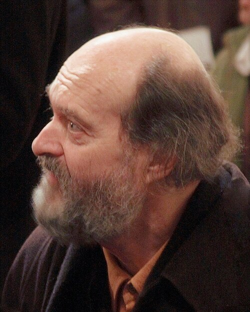

"Podría comparar mi música con una luz blanca que contiene todos los colores. Solo un prisma puede dividirla en colores y hacerlos visibles: ese prisma es el espíritu del oyente", explica el místico estonio. Tras ser censurado en la Unión Soviética por sus primeras obras vanguardistas y sufrir una profunda crisis creativa en 1968, Pärt se retiró a un silencio absoluto durante ocho años para estudiar el canto gregoriano medieval y la polifonía renacentista. En 1976 emergió con su invención suprema: el estilo Tintinnabuli (pequeñas campanas), donde una voz melódica diatónica dialoga con una segunda voz que toca exclusivamente las notas del acorde perfecto de la tríada. Obras como Spiegel im Spiegel y Tabula Rasa han tocado el corazón de millones de oyentes con su serenidad balsámica.
Toda la obra de Pärt está publicada exclusivamente por la prestigiosa editorial vienesa Universal Edition y catalogada rigurosamente por el Arvo Pärt Centre en Laulasmaa (Estonia), clasificando tanto sus piezas orquestales de vanguardia soviética temprana como su extenso corpus coral e instrumental Tintinnabuli.
Contexto Vital: Ingeniero de sonido en la radio estatal de Estonia. Introduce por primera vez el dodecafonismo en la URSS con 'Nekrolog' (1960), desatando la cólera de la Unión de Compositores Soviéticos por 'influencia burguesa'.
Contexto Vital: Ocho años casi sin publicar una sola nota. Estudia canto gregoriano, monodia medieval y polifonía de Machaut y Josquin. En 1976 compone la humilde pieza para piano 'Für Alina', naciendo oficialmente el Tintinnabuli. Emigra a Viena y Berlín en 1980.
Contexto Vital: Alianza histórica con el productor Manfred Eicher y el sello discográfico ECM New Series. Regreso triunfal a una Estonia independiente en 2010. Obras corales magnas: 'Passio', 'Miserere', 'Kanon Pokajanen'.
Clasificación de sus obras instrumentales y corales cumbres:
| Obra | Dotación Instrumental | Año | Aporte & Significado Conceptual |
|---|---|---|---|
| Spiegel im Spiegel (Espejo en el espejo) | Violín (o violonchelo) y Piano | 1978 | La obra más icónica de Pärt; arpegios de piano como un prisma de cristal sobre notas sostenidas infinitas que parecen reflejarse mutuamente en un espejo eterno. |
| Für Alina (Para Alina) | Piano solo | 1976 | El manifiesto fundacional del Tintinnabuli; quince compases sobre el acorde de Si menor tocados con pedal sostenido como campanas solitarias en la niebla. |
| Fratres (Hermanos) | Cuerdas y percusión (claves / timbal) | 1977 | Nueve variaciones sobre un tema coral hipnótico interrumpidas periódicamente por un golpe seco de percusión y pizzicatos de campana. |
| Tabula Rasa (Tabla rasa / Pizarra limpia) | Doble concierto para 2 violines, piano preparado y orquesta de cuerdas | 1977 | Obra maestra orquestal del siglo XX; el segundo movimiento ('Silentium') desciende en una espiral armónica de belleza fúnebre hasta la frontera del silencio. |
| Cantus in Memoriam Benjamin Britten | Campana tubular solista en La y orquesta de cuerdas | 1977 | Elegía fúnebre donde todas las cuerdas tocan escalas descendentes en cánones a diferentes velocidades sobre el tañido fúnebre de una campana solitaria. |
| Obra | Texto / Idioma | Año | Aporte & Significado Conceptual |
|---|---|---|---|
| Passio (Pasión según San Juan) | Evangelio de San Juan (Latín) | 1982 | 70 minutos ininterrumpidos de devoción estricta con cuarteto vocal, coro y ensamble instrumental sin un solo efectismo teatral externo. |
| Kanon Pokajanen (Canon de Arrepentimiento) | Eslavo eclesiástico antiguo | 1997 | Compuesto para el 750 aniversario de la Catedral de Colonia; 90 minutos para coro a capella de una profundidad y recogimiento monástico abrumadores. |
| Magnificat | Canto de la Virgen María (Latín) | 1989 | Polifonía aérea donde la voz de soprano solista canta en quintas y terceras suspendidas de una pureza sobrenatural. |